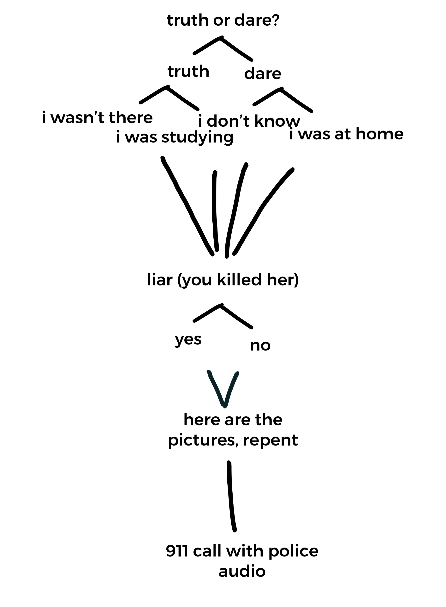
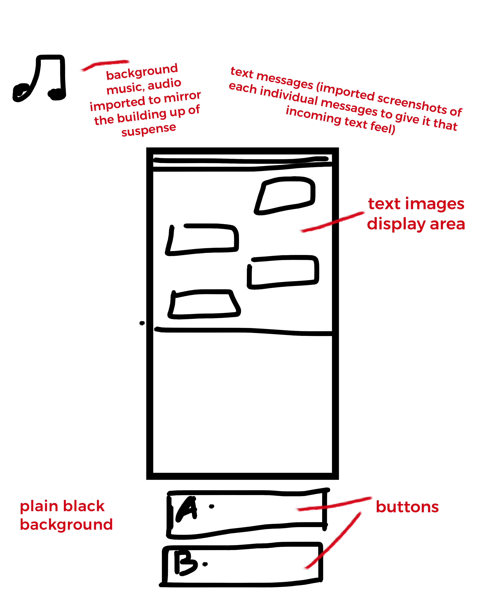

1 / 4
TEXTING GAME:
- Text-message game, pick your own adventure horror game.
- Screenshotted images of texts in the center, user can pick which option they want.
- Uses JQuery and SoundJS libraries.
- I will try to make the texting experience as realistic as possible by making it look like real text messages.
2 / 4
STORY:
- Starts off with a message of "Do you want to play Truth or Dare?" from an anonymous number.
- Story progresses (as shown below) as the user picks their options with the buttons.
- All the options lead to the same ending, which is from a 911 call from the police that they have to accept, audio changes according to the button pressed (I will import audio for the call on YouTube).

3 / 4
WIREFRAME:
- "Phone" area acts as a gallery, switch through it with JQuery attr() and .delay() functions.
- Buttons take you to different actions with JQuery button clicked functions.
- Audio changes with the button pressed functions, used with the SoundJS library, might include ambient sounds if possible, as if user is using is listening in with earphones.

❮
❯